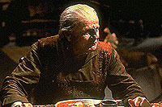
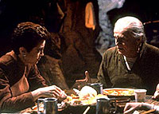

MANCHETE
DO EPISDIO
Kira
veculo de anlise coerente sobre
ao poltica e bem maior da populao
Episdio
anterior | Prximo
episdio
Sinopse:
Data Estelar:
46844.3.

Kira
se encontra frente a um difcil dilema moral, quando se v com o
dever de remover um teimoso Bajoriano, de nome Mullibok (bela
atuao de Brian Keith), de sua casa em uma lua Bajoriana, em
nome do progresso.
Existe tambm uma trama secundria envolvendo Jake e Nog, com os
dois tentando lucrar com o mercado de oportunidades que o cenrio
da estao oferece.
Comentrios:
"Progress" uma magnfica histria que
discute o preo do progresso. Como podemos ver claramente por
meio do episdio, em alguns momentos as pessoas devem fazer
sacrifcios em favor do bem maior.
Esse conceito aparentemente bvio norteia muitas das discusses
de cincia poltica - a vontade geral versus a vontade da
maioria versus a vontade individual.
A primeira representa o que melhor para a maior parte da
populao; a segunda o que a maior parte das pessoas quer
para si, mas que no necessariamente representa o bem maior para
a massa; a terceira, finalmente, a individualizao da
vontade da maioria.

Ilustrando
esse conflito est Kira Nerys. Este episdio retoma a personagem
onde "Battle
Lines" a deixou: lidando com seu violento
interior.
Neste episdio ela tem que lidar com o fato de que agora (como
apropriadamente apontado por Sisko em uma inesquecvel cena no
curso do episdio) trabalha "no outro lado" da cadeia
poltica e no pode mais "simpatizar com todo 'co vadio'
lutando batalhas impossveis", como aquelas que ela prpria
lutou sua vida inteira contra os Cardassianos.
Um conto belo e extremamente calmo. Faz bem alma. Por fim, a
trama secundria envolvendo Nog e Jake tambm excelente
material.
Citaes:
Sisko - "You have to
realize something, Major --you're on the other side now. Pretty
uncomfortable, isn't it?"
("Voc precisa perceber uma coisa, major --voc est do
outro lado agora. Bem desconfortvel, no ?")
Trivia:
 Episdio contou com a participao de Nog.
Episdio contou com a participao de Nog.
Este episdio foi originalmente intitulado "Inner
Conflict".
Ficha
tcnica:
Escrito por Peter Allan
Fields
Direo de Les Landau
Exibido em 10/05/1993
Produo: 015
Elenco:
Avery Brooks como
Benjamin Lafayette Sisko
Ren Auberjonois como Odo
Nana Visitor como Kira Nerys
Colm Meaney como Miles Edward O'Brien
Siddig El Fadil como Julian Subatoi Bashir
Armin Shimerman como Quark
Terry Farrell como Jadzia Dax
Cirroc Lofton como Jake Sisko
Elenco convidado:
Brian Keith como Mullibok
Aron Eisenberg como Nog
Nicholas Worth como "o capito
aliengena"
Michael Bofshever como Toran
Terrence Evans como Baltrim
Annie O'Donnell como Keena
Daniel Riordan como "o primeiro guarda"